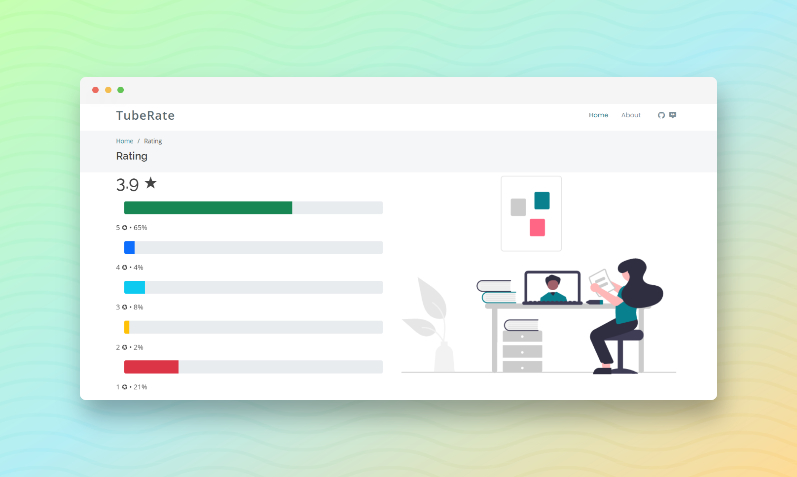

November 21, 2021
TubeRate
It allows the user to view ratings of YouTube videos which will be based on sentiment analysis performed on the comments of those videos.
Emotion-Based Ratings
TubeRate employs a two-step process. First, it extracts comments from the video. Second, it utilizes sentiment analysis to determine the emotions conveyed within these comments. These emotions are then translated into ratings on a 1 to 5 scale. For instance, a rating of 1 signifies extreme dissatisfaction, while a rating of 5 represents a high level of satisfaction.
Streamlined User Experience
The app offers a user-friendly interface. Users simply input the video URL, and the app handles the rest. Leveraging the power of Flask and Bootstrap, TubeRate ensures smooth and responsive interactions. The use of Flask enables real-time processing, while Bootstrap guarantees an appealing and intuitive design, showcasing the emotion-based ratings prominently for users' quick comprehension.